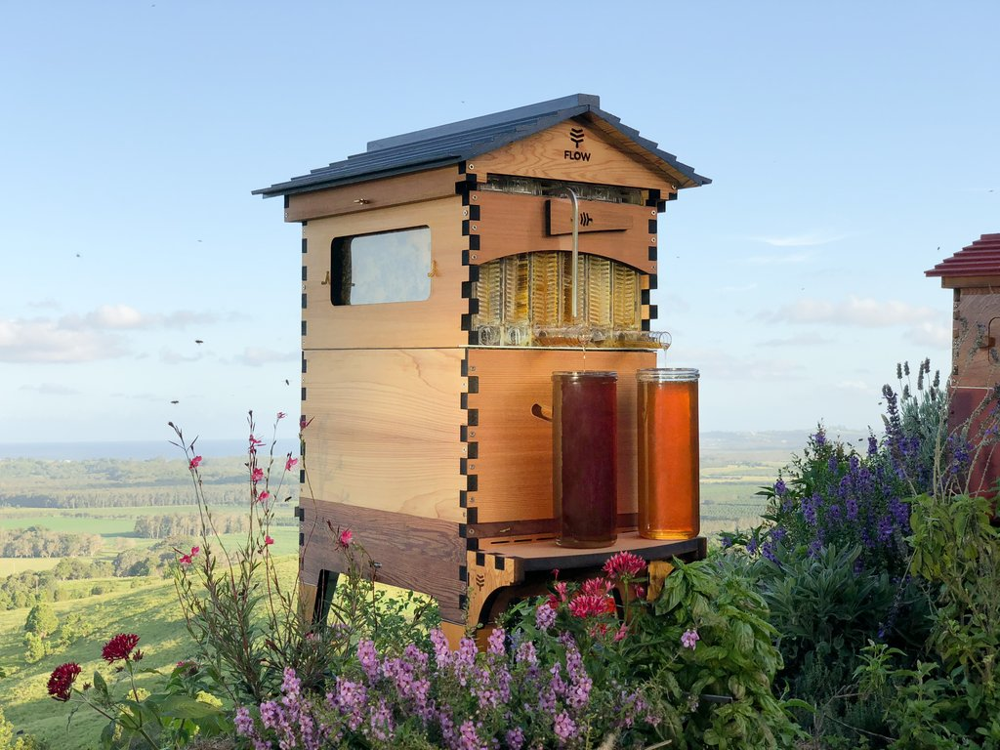

O que é Flow Hive
Flow Hive é uma colmeia feita de modo para permitir que o mel seja extraído de forma mais fácil, simplesmente abrindo uma torneira: A colmeia não precisa ser aberta, e as abelhas não são perturbadas como na extração normal.
Flow Hive é uma colmeia feita de modo para permitir que o mel seja extraído de forma mais fácil, simplesmente abrindo uma torneira: A colmeia não precisa ser aberta, e as abelhas não são perturbadas como na extração normal.
As armações contêm um silicone alveolar de plástico parcialmente formado com aberturas verticais. As abelhas preenchem essas lacunas com cera de abelha e as células com mel. Quando o mecanismo das molduras é ativado, as lacunas verticais são compensadas pela metade de uma célula, quebrando a cobertura de cera e permitindo que o mel flua através das células para um canal na base de cada moldura e para fora em um recipiente de coleta. O sistema é reiniciado e as abelhas retiram a tampa e reabastecem as células, reiniciando o processo. Alguns críticos questionam o uso de plástico, embora a base de plástico seja comumente usada na apicultura convencional. O Flow Hive usa um plástico livre de BPA e BPS, permitindo que as abelhas produzam seu próprio favo de cera natural no ninho de cria.
